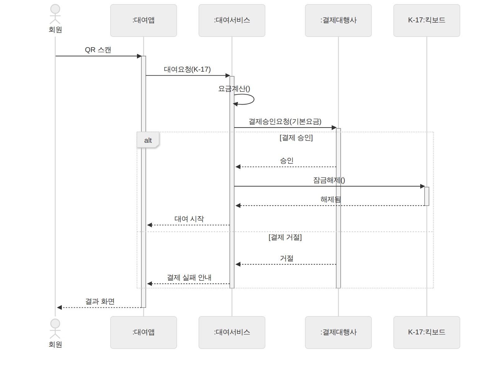
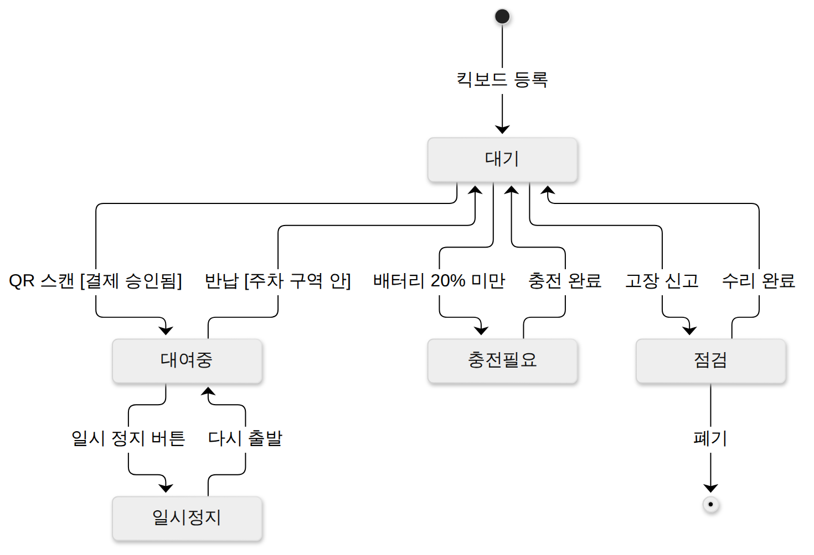

R03 · UML ② — 사진에서 동영상으로: 행위 다이어그램
1과목 리뉴얼A1 리뉴얼 셋째 장은 책 1.1.2 UML의 나머지 절반, 행위 다이어그램이에요. 어제(R02)는 씽씽 앱의 뼈대를 클래스·객체·배치 같은 구조 다이어그램으로 찍었죠. 그건 앱이 멈춰 있을 때의 사진이었어요. 오늘은 같은 앱이 움직일 때를 찍어요. 회원이 킥보드 앞에서 QR을 찍고, 앱이 서버에 묻고, 결제가 승인되고, 잠금이 풀리고, 킥보드의 상태가 ‘대기’에서 ‘대여 중’으로 바뀌는 그 몇 초를 일곱 가지 다이어그램이 각자 다른 각도로 기록해요. 그중 시험에 자주 나오는 유스케이스·시퀀스·상태는 구성요소 하나하나까지, 커뮤니케이션·활동은 정의·구성·사례로, 상호작용 개요·타이밍은 정의와 쓰임새로 다뤄요.
- 행위(동적) 다이어그램 7종을 ‘무엇을 보여 주나’로 구별하고, 시퀀스·커뮤니케이션·상호작용 개요·타이밍이 상호작용 다이어그램 묶음임을 말할 수 있다
- 유스케이스 다이어그램의 구성요소 3가지(유스케이스·액터·시스템)와 액터 2종(사용자 액터·시스템 액터)을 구별하고, 관계 4가지(연관·포함·확장·일반화)를 판정할 수 있다
- 시퀀스 다이어그램의 구성요소(객체·생명선·실행·메시지·회귀 메시지, 프레임)를 읽고, “시퀀스는 정적에 가깝다” 같은 틀린 선지를 가려낼 수 있다
- 상태 다이어그램의 구성요소 6가지(상태·시작 상태·종료 상태·전이·이벤트·전이 조건)와 표기를 구별하고, ‘전이를 일으키는 요인 = 이벤트’를 고를 수 있다
- 다이어그램 설명 짝 바꾸기(상태 ↔ 시퀀스, 클래스 ↔ 커뮤니케이션)를 잡아내고, 기능 모델 = 유스케이스, 정적 모델 = 클래스, 동적 모델 = 시퀀스·상태·활동 대응을 말할 수 있다
1부 (약 15분)
2부 (약 15분)
⓪ 큰 그림 — 사진에서 동영상으로
행위 다이어그램(Behavioral Diagram)은 시스템이 시간 속에서 어떻게 동작하는가를 그리는 UML 다이어그램이에요. 구조 다이어그램이 “어떤 클래스가 있고 서로 어떻게 엮여 있나”라는 정적인 질문에 답했다면, 행위 다이어그램은 “누가 무엇을 원하고, 누가 누구에게 언제 말을 걸고, 그 결과 무엇이 어떻게 바뀌나”라는 동적인 질문에 답해요. 그래서 시험에서는 동적 다이어그램이라고도 불러요. 구조 다이어그램이 증명사진이라면 행위 다이어그램은 자동차 블랙박스 영상이에요. 사진으로는 차가 어떻게 생겼는지만 알 수 있지만, 블랙박스를 돌려 보면 누가 먼저 끼어들었는지, 몇 초 만에 멈췄는지까지 남거든요.
오늘의 장면은 하나로 고정해요. 씽씽 회원 지수가 강남역 앞 킥보드 K-17을 빌리는 대여 한 번이에요. 같은 몇 초를 일곱 다이어그램이 각자 다른 질문으로 찍는다는 걸 기억하면, 다이어그램 이름과 설명을 짝짓는 문제가 훨씬 쉬워져요. 아래 그림 1이 오늘의 지도예요.
① 행위 다이어그램 7종 지도
UML 2.x는 행위 다이어그램을 일곱 개로 나눠요. 이름만 외우면 금방 섞이니, 각자 무엇을 주인공으로 찍는지로 기억하는 게 좋아요. 유스케이스는 시스템 밖 사용자가 주인공이고, 시퀀스와 커뮤니케이션은 객체들 사이의 대화가 주인공이에요. 상태는 객체 하나의 일생이, 활동은 일의 흐름이 주인공이고, 상호작용 개요와 타이밍은 상호작용을 더 크게(흐름) 또는 더 정밀하게(시간) 보는 확대경이에요.
| 다이어그램 | 무엇을 보여 주나 | 씽씽 대여 장면에서 |
|---|---|---|
| 유스케이스(Use Case) | 사용자 관점에서 본 시스템의 기능과 그 기능을 쓰는 외부 요소. 기능 요구를 정의할 때 | 회원이 ‘킥보드를 빌린다’, 결제 대행사가 ‘결제를 승인한다’ |
| 시퀀스(Sequence) | 객체 사이의 상호작용을 메시지가 오가는 시간 순서로 | 앱 → 대여서비스 → 결제대행사 → 킥보드로 이어지는 호출 순서 |
| 커뮤니케이션(Communication) | 시퀀스처럼 메시지를 보여 주되, 객체 사이의 연관(연결)까지 함께 | 대여서비스가 앱·결제대행사·킥보드와 각각 이어져 있는 모습 + 번호 붙은 메시지 |
| 상태(State) | 한 객체가 이벤트에 따라 상태를 어떻게 바꾸는지, 진입·탈출 조건과 전이 | 킥보드 K-17이 대기 → 대여 중 → 일시 정지 → 대기 |
| 활동(Activity) | 처리 로직과 조건에 따른 처리 흐름을 순서대로 | 반납 처리: 사진 → 주차 구역 확인 → 결제·잠금 동시 진행 |
| 상호작용 개요(Interaction Overview) | 여러 상호작용 다이어그램 사이의 제어 흐름 | ‘대여’ 조각 → ‘주행’ 조각 → ‘반납’ 조각 |
| 타이밍(Timing) | 객체 상태 변화와 시간 제약을 시간축 위에 명시 | “QR 스캔 후 5초 안에 잠금이 풀려야 한다” |
이 중 시퀀스·커뮤니케이션·상호작용 개요·타이밍 넷은 모두 객체 사이의 메시지 교환, 즉 상호작용(Interaction)을 다루기 때문에 상호작용 다이어그램(교류 다이어그램)이라는 하위 묶음으로 따로 불러요. “시퀀스 다이어그램은 교류 다이어그램의 한 종류다”라는 선지가 나오면 맞는 설명이에요. 반대로 구조 쪽 이름(배치·컴포넌트·패키지)을 행위 목록에 슬쩍 끼워 넣거나, 아예 UML에 없는 이름(절차 다이어그램·단계(Phase) 다이어그램)을 섞는 것이 출제자의 단골 수법이에요.
② 유스케이스 다이어그램 기출 10회
R01에서 요구분석의 출발점은 “사용자가 시스템에 무엇을 원하나”를 빠짐없이 모으는 일이라고 했죠. 그런데 요구 목록이 수십 줄이 되면 고객도 개발자도 전체가 한눈에 안 들어와요. 그래서 기능 요구를 그림 한 장으로 펼쳐 놓고 고객과 “이게 다 맞나요?”를 합의하는 도구가 필요했고, 그게 유스케이스 다이어그램이에요.
유스케이스 다이어그램(Use Case Diagram)은 시스템이 제공하는 기능과, 그 기능을 쓰는 외부 요소를 사용자의 관점에서 표현한 다이어그램이에요. 여기서 ‘사용자 관점’이 핵심이에요. 개발자가 내부 구현을 정리하는 그림이 아니라, 시스템 밖에 선 사람이 “이 시스템으로 무엇을 할 수 있나”를 보는 그림이에요. 그래서 “요금 테이블을 갱신한다”처럼 회원 눈에 안 보이는 내부 처리는 유스케이스가 되지 않고, “킥보드를 빌린다”처럼 회원이 목표로 삼는 일만 유스케이스가 돼요. 기능을 모델링하므로 시험에서는 기능 모델 = 유스케이스 다이어그램으로 짝지어요.
구성요소 3가지 — 유스케이스 · 액터 · 시스템
유스케이스(Use Case)는 시스템이 제공해야 하는 서비스, 다시 말해 액터가 시스템을 통해 수행하는 일련의 일이에요. 타원 안에 “~한다” 꼴의 동사구로 이름을 적어요. ‘킥보드를 빌린다’는 QR 인식, 본인 확인, 잠금 해제까지 여러 단계를 묶은 하나의 목표라서 유스케이스 하나가 돼요.
액터(Actor)는 시스템과 상호작용하는 역할이에요. 사람 모양(막대 인형)으로 그리고, 이름은 실제 사람·조직이 아니라 역할로 붙여요. “김지수”가 아니라 “회원”, “박 매니저”가 아니라 “관리자”예요. 한 사람이 회원이면서 관리자일 수도 있는데, 그러면 액터 두 개를 맡는 거예요. 액터는 꼭 필요한 역할만 남기도록 추상화·최소화하고, 한 액터가 여러 유스케이스와 이어질 수 있어요. 액터는 두 종류로 나눠요. 시스템을 직접 쓰는 사람(역할)인 사용자 액터(User Actor)와, 이미 다른 곳에서 개발돼 우리 시스템과 데이터를 주고받는 외부 시스템인 시스템 액터(System Actor)예요. 씽씽에서 결제 승인을 해 주는 결제 대행사나 위치를 알려 주는 지도 API가 시스템 액터예요.
시스템(System)은 만들려는 시스템 전체의 영역이에요. 큰 사각형 경계로 그리고, 유스케이스는 경계 안에, 액터는 경계 밖에 둬요. 경계선 하나가 “우리가 만들 것”과 “우리가 쓰는 바깥”을 갈라 주기 때문에, 액터가 경계 안으로 들어가 있으면 잘못 그린 그림이에요.
| 구성요소 | 뜻 | 표기 | 씽씽 예 |
|---|---|---|---|
| 유스케이스 | 시스템이 제공하는 서비스, 액터가 시스템으로 하는 일련의 일 | 타원 | 킥보드를 빌린다, 요금을 결제한다 |
| 액터 — 사용자 액터 | 시스템을 쓰는 사람의 역할 | 막대 인형 | 회원, 정기권 회원, 관리자 |
| 액터 — 시스템 액터 | 데이터를 주고받는 이미 개발된 외부 시스템 | 막대 인형 또는 «actor» 상자 | 결제 대행사, 지도 API |
| 시스템 | 만들 시스템 전체의 범위 | 사각형 경계 | ‘씽씽 시스템’ 사각형 |
그림 2에서 결제대행사를 보면 사람이 아닌데도 액터예요. 액터의 정의가 “시스템과 상호작용하는 사람 또는 다른 시스템의 역할”이기 때문이에요. 그런데 시험에는 “외부 시스템은 액터로 볼 수 없다”라는 선지가 꾸준히 나와요. 우리 결제를 묵묵히 승인해 주는 결제 대행사를 출제자가 일부러 서운하게 만드는 선지라고 기억하면, 다음에 보자마자 ‘틀림’에 동그라미를 칠 수 있어요.
③ 유스케이스 관계 4가지
유스케이스 다이어그램의 선은 아무렇게나 긋지 않아요. 액터와 유스케이스, 유스케이스와 유스케이스, 액터와 액터를 잇는 방식이 네 가지로 정해져 있어요. 연관은 액터와 유스케이스가 상호작용한다는 뜻의 실선이고, 포함과 확장은 유스케이스끼리 기능을 나눠 붙이는 점선 화살표, 일반화는 비슷한 것들을 상위 개념으로 묶는 빈 삼각형 실선이에요.
연관(Association) 관계
연관 관계는 유스케이스와 액터 사이에 상호작용이 있음을 나타내요. 실선 하나로 잇고, 보통 화살표는 없어요. 그림 2에서 회원과 ‘킥보드를 빌린다’를 잇는 선, 결제대행사와 ‘요금을 결제한다’를 잇는 선이 연관이에요. “이 액터가 이 기능을 쓴다(또는 이 기능에 관여한다)” 정도의 뜻이라 가장 기본적인 선이에요.
포함(Include) 관계
포함 관계는 한 유스케이스가 실행될 때 다른 유스케이스의 실행을 반드시 전제로 하는 관계예요. 여러 유스케이스가 공통으로 쓰는 단계를 따로 떼어 내 재사용할 때 생겨요. 씽씽에서는 킥보드를 빌릴 때마다 본인 인증을 거치고, 정기권을 살 때도 본인 인증을 거쳐요. 그래서 ‘본인 인증’을 따로 유스케이스로 빼고, 기본 유스케이스에서 포함 유스케이스 쪽으로 점선 화살표를 그은 뒤 «include»라고 적어요. 본인 인증을 빼 버리면 ‘킥보드를 빌린다’ 자체가 완성되지 않아요.
확장(Extend) 관계
확장 관계는 기본 유스케이스를 수행하다가 특정 조건을 만족할 때만 확장 유스케이스가 추가로 수행되는 관계예요. 씽씽에서 ‘쿠폰 적용’은 회원에게 쿠폰이 있을 때만 끼어들어요. 쿠폰이 없어도 대여는 아무 문제 없이 끝나죠. 이때는 확장 유스케이스에서 기본 유스케이스 쪽으로 점선 화살표를 긋고 «extend»라고 적어요. 화살표 방향이 포함과 반대라는 게 포인트예요. 포함은 기본이 ‘너 없인 안 돼’ 하고 끌어당기는 쪽이고, 확장은 옵션이 ‘필요하면 나도 붙여 줘’ 하고 기본에 기대는 쪽이에요.
패스트푸드로 비유하면 포함은 세트 메뉴의 감자튀김이에요. 세트를 시키면 묻지도 않고 무조건 따라 나와요. 확장은 계산대에서 듣는 “치즈 추가하시겠어요?”예요. 원할 때만 붙고, 안 붙여도 버거는 버거예요.
일반화(Generalization) 관계
일반화 관계는 비슷한 유스케이스나 액터를 모아 추상화한 상위 유스케이스·액터와 연결해 이해를 돕는 관계예요. R02의 클래스 일반화와 같은 is-a 관계라서 표기도 같아요 — 구체적인 쪽에서 일반적인 쪽으로 속이 빈 삼각형 실선 화살표를 그어요. 그림 2에서 ‘카드 결제’와 ‘포인트 결제’는 둘 다 ‘요금을 결제한다’의 한 종류이고, 액터 ‘정기권 회원’은 ‘회원’의 한 종류예요. 정기권 회원은 회원이 할 수 있는 일을 모두 할 수 있으면서, 자기만의 유스케이스(예: 정기권 연장)를 더 가질 수 있어요.
| 관계 | 뜻 | 표기 | 씽씽 예 |
|---|---|---|---|
| 연관 | 액터와 유스케이스의 상호작용 | 실선 | 회원 — 킥보드를 빌린다 |
| 포함 | 기본 실행에 항상 필요한 공통 기능 | 점선 화살표 «include», 기본 → 포함 | 킥보드를 빌린다 ┄> 본인 인증 |
| 확장 | 특정 조건일 때만 덧붙는 기능 | 점선 화살표 «extend», 확장 → 기본 | 쿠폰 적용 ┄> 킥보드를 빌린다 |
| 일반화 | 비슷한 유스케이스·액터의 상위 묶음 | 빈 삼각형 실선, 구체 → 일반 | 카드 결제 ─▷ 요금을 결제한다 |
직접 판정해 보기. 아래 세 장면에 그림 3의 질문을 던져 보세요. 오른쪽 칸을 손으로 가리고 먼저 답해 본 뒤 확인하면 돼요.
| 장면 | 빼면 기본이 못 돌아가나? | 관계 |
|---|---|---|
| ‘킥보드를 반납한다’는 매번 ‘주차 사진 확인’을 거친다 | 예 — 사진 없이는 반납 확정 불가 | 포함 |
| ‘킥보드를 빌린다’ 중 야간(22시 이후)에만 ‘안전 수칙 동의’가 뜬다 | 아니요 — 낮에는 안 뜬다 | 확장 |
| ‘요금을 결제한다’를 수행하다 잔액이 모자랄 때만 ‘포인트 충전’이 실행된다 | 아니요 — 잔액이 충분하면 생략 | 확장 |
④ 시퀀스 다이어그램 기출 9회
유스케이스 다이어그램의 타원 ‘킥보드를 빌린다’는 한 줄이지만, 그 뒤에서는 앱·서버·결제 대행사·킥보드가 몇 번이나 말을 주고받아요. 이 대화를 순서대로 적어 두지 않으면 “결제가 먼저냐 잠금 해제가 먼저냐” 같은 문제를 코드를 다 짠 뒤에야 발견해요. 그래서 객체 사이의 대화를 시간 순서대로 펼쳐 보는 그림이 필요했어요.
시퀀스 다이어그램(Sequence Diagram)은 객체 사이의 상호작용을 메시지 흐름으로 표현한 다이어그램이에요. 우리말로 순차 다이어그램이라고도 해요. 그림을 읽는 규칙은 간단해요. 가로축에는 대화에 참여하는 객체가 늘어서고, 세로축은 위에서 아래로 흐르는 시간이에요. 위에 있는 메시지가 먼저 일어난 일이에요. 시간이 축으로 들어가 있으니 시퀀스 다이어그램은 당연히 동적 다이어그램이고, 상호작용 다이어그램 묶음의 대표 선수예요.
구성요소 — 객체 · 생명선 · 실행 · 메시지 · 회귀 메시지
객체(Object)는 대화에 참여하는 인스턴스로, 그림 맨 위에 사각형으로 놓고 그 안에 밑줄 친 이름을 적어요. R02의 객체 다이어그램처럼 K-17:킥보드(객체 이름:클래스 이름) 꼴이고, 특정 객체가 아니면 :대여서비스처럼 클래스 이름만 써요.
생명선(Lifeline)은 객체에서 아래로 뻗은 점선이에요. 그 객체가 살아 있는 동안의 시간 흐름을 나타내고, 그 위에서 객체가 겪는 이벤트(메시지를 받고 보내는 일)가 차례로 표시돼요.
실행(Activation, 활성 박스)은 생명선 위에 얹은 좁은 직사각형이에요. 객체가 오퍼레이션(함수)을 실행하고 있는 구간을 뜻하고, 직사각형이 길수록 오퍼레이션 수행 시간이 길다는 뜻이에요. 대여서비스가 요청을 받아 결제를 기다리는 동안 내내 활성 박스가 길게 이어지는 식이에요.
메시지(Message)는 한 객체가 다른 객체에게 보내는 요청이에요. 보내는 생명선에서 받는 생명선으로 화살표를 긋고 위에 메시지 이름을 적어요. 메시지를 받은 객체는 그 이름의 오퍼레이션을 수행해요. 요청은 실선 화살표, 결과를 돌려주는 응답(Reply)은 점선 화살표로 구별해서 그리는 게 보통이에요.
회귀 메시지(Self-Message)는 객체가 자기 자신의 메서드를 호출하는 메시지예요. 자기 생명선에서 나가서 다시 자기 생명선으로 돌아오는 꺾인 화살표로 그려요. 대여서비스가 대여 요청을 받고 결제 대행사에 묻기 전에 자기 안의 요금계산()을 부르는 장면이 회귀 메시지예요. 다른 객체에게 묻지 않고 “요금이 얼마더라…” 하고 혼잣말하는 화살표라고 생각하면 모양이 바로 떠올라요.
여기에 하나를 더 알아 두면 좋아요. 메시지 몇 개를 큰 사각형으로 둘러싸고 왼쪽 위에 연산자를 적은 프레임(결합 조각, Combined Fragment)이에요. alt는 조건에 따라 갈라지는 if-else(결제 승인 / 거절), opt는 조건이 맞을 때만 하는 if(쿠폰이 있으면), loop는 반복(주행 중 10초마다 위치 전송)이에요. 기출 선지에 ‘제어 블록’이라는 이름으로 시퀀스 구성 항목에 등장한 적이 있어요.
| 구성요소 | 뜻 | 표기 |
|---|---|---|
| 객체 | 대화에 참여하는 인스턴스 | 위쪽 사각형, 밑줄 친 이름 |
| 생명선 | 객체가 존재하는 시간 흐름, 그 위에 이벤트 표시 | 객체 아래로 뻗은 점선 |
| 실행(활성 박스) | 오퍼레이션을 실행 중인 구간, 길수록 오래 | 생명선 위 좁은 직사각형 |
| 메시지 | 객체 사이의 요청 → 받는 쪽이 오퍼레이션 수행 | 화살표(요청 실선, 응답 점선) |
| 회귀 메시지 | 자기 자신의 메서드 호출 | 자기 생명선으로 돌아오는 화살표 |
| 프레임(결합 조각) | 조건·반복 구간 묶기 | 사각형 + alt·opt·loop 표시 |
이제 구성요소를 다 알았으니 대여 한 번을 통째로 그려 봐요. 그림 5는 회원이 QR을 찍은 순간부터 화면에 ‘대여 시작’이 뜰 때까지예요. 위에서 아래로 읽으면서 화살표 하나하나가 어느 객체의 어떤 오퍼레이션을 깨우는지 따라가 보세요.

| 순서 | 메시지 | 구성요소 |
|---|---|---|
| ① | 회원 → 대여앱: QR 스캔 | 메시지, 대여앱 활성 박스 시작 |
맨 위 첫 화살표. 이제 대여앱이 일하기 시작했으니 생명선 위에 활성 박스가 생겨요.
| 순서 | 메시지 | 구성요소 |
|---|---|---|
| ① | QR 스캔 | 메시지 |
| ② | 대여앱 → 대여서비스: 대여요청(K-17) | 메시지, 대여서비스 활성 박스 시작 |
한 칸 아래 = 조금 뒤. 대여서비스가 요청을 받아 오퍼레이션을 실행해요.
| 순서 | 메시지 | 구성요소 |
|---|---|---|
| ①~② | QR 스캔 · 대여요청 | 메시지 |
| ③ | 대여서비스 → 대여서비스: 요금계산() | 회귀 메시지 |
남에게 묻지 않고 자기 메서드를 불러요. 화살표가 자기 생명선으로 돌아와요.
| 순서 | 메시지 | 구성요소 |
|---|---|---|
| ①~③ | QR · 대여요청 · 요금계산 | 메시지 · 회귀 |
| ④ | 대여서비스 → 결제대행사: 결제승인요청 | 메시지(시스템 액터 쪽 객체로) |
유스케이스 다이어그램의 시스템 액터가 시퀀스에서는 생명선 하나가 돼요.
| 순서 | 메시지 | 구성요소 |
|---|---|---|
| ①~④ | 요청 · 계산 · 결제 요청 | 메시지 · 회귀 |
| ⑤ | [승인] 승인 응답 → 잠금해제() / [거절] 실패 안내 | alt 프레임, 응답(점선) |
결과가 둘로 갈리니 사각형 프레임으로 묶고 칸막이로 나눠요. if-else를 그림으로 쓴 셈이에요.
| 순서 | 메시지 | 구성요소 |
|---|---|---|
| ①~⑤ | 요청 · 계산 · 결제 · 분기 | 메시지 · 회귀 · 프레임 |
| ⑥ | 대여서비스 → 대여앱: 대여 시작 → 회원에게 결과 화면 | 응답, 활성 박스들이 차례로 끝남 |
아래에서 위로 일이 끝나며 활성 박스가 닫혀요. 그림 5가 완성됐어요.
같은 내용을 객체 배치 중심으로 다시 그리면 ⑥절의 커뮤니케이션 다이어그램이 돼요. 그러니 시퀀스와 커뮤니케이션은 같은 이야기를 다른 카메라 앵글로 찍은 것이라고 기억해 두세요.
⑤ 상태 다이어그램 기출 2회
대여 시퀀스를 그려 놓고 보면 새 걱정이 생겨요. 이미 누가 타고 있는 킥보드에 또 대여 요청이 들어오면? 점검 중인 킥보드의 QR을 찍으면? 이런 질문은 메시지 순서가 아니라 킥보드 한 대의 처지에 관한 질문이에요. 킥보드가 지금 어떤 상태이고, 무슨 일이 생기면 어느 상태로 넘어갈 수 있는지를 따로 그려 둬야 잘못된 전이를 막을 수 있어요.
상태 다이어그램(State Diagram)은 하나의 객체가 자기가 속한 클래스의 상태를 어떻게 바꾸는지, 또는 다른 객체와의 상호작용에 따라 상태가 어떻게 변하는지를 표현한 다이어그램이에요. 상태를 바꾸는 계기는 이벤트예요. 시퀀스가 여러 객체 사이의 대화를 찍는다면, 상태 다이어그램은 객체 하나의 일생을 찍어요. 킥보드의 하루 일기라고 보면 돼요. “오후 3시, QR이 찍혀서 대여 중이 됐다. 3시 20분, 반납돼서 다시 대기로 돌아왔다. 저녁 7시, 배터리가 20% 밑으로 떨어져 충전 필요가 됐다.”
구성요소 6가지
상태(State)는 객체가 존재할 수 있는 조건, 즉 객체가 머물러 있는 처지예요. 둥근 모서리 사각형 안에 상태 이름을 적어요. 킥보드의 ‘대기’, ‘대여 중’, ‘일시 정지’, ‘충전 필요’, ‘점검’이 상태예요.
시작 상태(Initial State)는 객체의 일생이 시작되는 지점으로 속이 채워진 원으로 그려요. 종료 상태(Final State)는 객체의 일생이 끝나는 지점으로 원 안에 속이 채워진 원(이중 원)으로 그려요. 킥보드는 등록되는 순간 시작 상태에서 ‘대기’로 들어가고, 폐기되면 종료 상태에 도착해요.
한 상태에서 다른 상태로 옮겨 가는 일 자체를 전이(Transition)라고 해요. 그림에서는 출발 상태에서 도착 상태로 향하는 화살표예요. 이벤트(Event)는 상태 변화를 일으키는 현상이에요. 전이 화살표 위에 이벤트 이름을 적어요. 이벤트는 회원의 QR 스캔 같은 외부 신호일 수도, ‘배터리 20% 미만’ 같은 조건의 충족일 수도, ‘30분 경과’ 같은 시간의 흐름일 수도 있어요. 전이 조건(Transition Condition, 가드)은 이벤트가 일어났을 때 전이가 실제로 일어나려면 만족해야 하는 조건으로, 참·거짓을 내는 불린 식을 대괄호 [ ] 안에 적어요. ‘QR 스캔 [결제 승인됨]’이라고 쓰면, QR이 찍혀도 결제가 승인된 경우에만 대여 중으로 넘어가요.
이벤트와 전이는 원인과 결과의 짝이에요. QR 스캔이라는 이벤트가 원인이고, 대기에서 대여 중으로 넘어가는 전이가 결과예요. 시험이 “상태 전이를 일으키는 요인은?”이라고 물으면 결과(전이)가 아니라 원인(이벤트)을 골라야 해요.
| 구성요소 | 뜻 | 표기 | 킥보드 예 |
|---|---|---|---|
| 상태 | 객체가 존재할 수 있는 조건 | 둥근 사각형 | 대기, 대여 중, 충전 필요 |
| 시작 상태 | 일생의 시작 | 속이 채워진 원 | 킥보드 등록 |
| 종료 상태 | 일생의 끝 | 원 안에 채워진 원 | 폐기 |
| 전이 | 상태가 다른 상태로 바뀌는 현상 | 화살표 | 대기 → 대여 중 |
| 이벤트 | 상태 변화를 일으키는 현상(신호·조건·시간) | 전이 위에 이름 | QR 스캔, 반납, 배터리 20% 미만 |
| 전이 조건 | 전이가 일어나기 위한 불린 식 | [조건] | [결제 승인됨], [주차 구역 안] |

| 지금 상태 | 이벤트 [전이 조건] | 전이 후 |
|---|---|---|
| 대기 | QR 스캔 [결제 승인됨] | 대여 중 |
이벤트(QR 스캔)가 일어나고 전이 조건(결제 승인)이 참이라서 전이가 일어났어요.
| 지금 상태 | 이벤트 [전이 조건] | 전이 후 |
|---|---|---|
| 대기 | QR 스캔 [결제 승인됨] | 대여 중 |
| 대여 중 | 일시 정지 버튼 | 일시 정지 |
편의점에 잠깐 들른 지수. 조건 없이 이벤트만으로 넘어가는 전이예요.
| 지금 상태 | 이벤트 [전이 조건] | 전이 후 |
|---|---|---|
| 대여 중 | 일시 정지 버튼 | 일시 정지 |
| 일시 정지 | 다시 출발 | 대여 중 |
같은 두 상태 사이를 오가는 전이는 화살표가 두 개(방향마다 하나)예요.
| 지금 상태 | 이벤트 [전이 조건] | 전이 후 |
|---|---|---|
| 일시 정지 | 다시 출발 | 대여 중 |
| 대여 중 | 반납 [주차 구역 안] | 대기 |
주차 구역 밖에서 반납을 누르면? 이벤트는 일어났지만 전이 조건이 거짓이라 대여 중에 그대로 머물러요.
| 지금 상태 | 이벤트 [전이 조건] | 전이 후 |
|---|---|---|
| 대여 중 | 반납 [주차 구역 안] | 대기 |
| 대기 | 배터리 20% 미만 | 충전 필요 |
사람이 아니라 조건 충족이 이벤트가 된 경우예요. 이렇게 이벤트에는 신호·조건·시간이 모두 올 수 있어요.
⑥ 커뮤니케이션 다이어그램
시퀀스 다이어그램은 시간 순서를 보기엔 좋지만, 객체가 많아지면 가로로 끝없이 늘어나서 “누가 누구와 직접 연결돼 있는지”가 잘 안 보여요. 대여서비스가 앱·결제대행사·킥보드 셋과 모두 이어진 허브라는 사실은 그림 5만 봐서는 바로 안 들어오죠. 이 연결 구조를 드러내려고 같은 상호작용을 다른 모양으로 그린 게 커뮤니케이션 다이어그램이에요.
커뮤니케이션 다이어그램(Communication Diagram)은 시퀀스 다이어그램처럼 객체 사이의 메시지를 표현하면서, 객체들 사이의 연관(링크)까지 함께 보여 주는 다이어그램이에요. 객체를 시간축에 줄 세우지 않고 평면에 자유롭게 배치한 뒤, 서로 연결된 객체끼리 실선(링크)으로 잇고, 그 링크 옆에 메시지와 방향 화살표를 적어요. 시간축이 없으니 순서는 번호로 표시해요. 1 다음에 1.1, 1.2처럼 소수점 번호를 쓰면 “1번 메시지를 처리하는 중에 일어난 하위 메시지”라는 중첩까지 나타낼 수 있어요. UML 1.x에서는 협력(Collaboration) 다이어그램이라고 불렀어요.
그림 5와 그림 7을 나란히 두면 차이가 분명해요. 정보는 거의 같지만, 시퀀스는 언제(시간 순서)가 잘 보이고 커뮤니케이션은 누구와 누가 연결돼 있나(구조)가 잘 보여요. 그래서 둘 중 무엇을 그릴지는 “지금 알고 싶은 게 순서냐 연결이냐”로 정해요.
⑦ 활동 · 상호작용 개요 · 타이밍
남은 셋은 책에서 행위 다이어그램 표 한 줄씩만 다루는 다이어그램이에요. 그래서 시험도 주로 “이 설명은 어느 다이어그램인가”를 묻는 수준이에요. 정의를 정확히 잡고, 씽씽 장면 하나씩으로 모양을 익혀 두면 충분해요.
활동 다이어그램(Activity Diagram)
활동 다이어그램은 시스템이 어떤 기능을 수행할 때의 처리 로직과 조건에 따른 처리 흐름을 순서대로 표현한 다이어그램이에요. 객체 사이의 메시지가 아니라 ‘무엇을 한 다음 무엇을 하나’라는 일의 흐름이 주인공이라서, 순서도(flowchart)와 많이 닮았어요. 구성은 시작 노드(채운 원)에서 출발해, 할 일을 적은 액션(둥근 사각형), 조건에 따라 갈라지는 결정 노드(마름모), 갈라진 흐름이 다시 만나는 병합 노드를 거쳐 종료 노드(이중 원)에 도착해요. 순서도와 다른 점은 둘이에요. 굵은 막대 하나로 흐름을 여러 갈래로 동시에 나누는 포크(Fork)와 다시 합치는 조인(Join)으로 병렬 처리를 그릴 수 있고, 세로 칸(스윔레인, Swimlane)으로 “누가 그 일을 하는지”를 나눌 수 있어요. 아래는 씽씽 반납 처리예요.
활동 다이어그램과 상태 다이어그램은 둘 다 둥근 사각형과 화살표를 써서 겉모습이 비슷해요. 가르는 기준은 둥근 사각형 안에 들어간 말이에요. ‘사진 판독’, ‘요금 결제 요청’처럼 하는 일(동사)이 들어가면 활동, ‘대기’, ‘대여 중’처럼 머무는 처지(상태)가 들어가면 상태 다이어그램이에요. 유스케이스와도 구별해 두세요. 유스케이스는 ‘반납한다’라는 기능이 있다는 것만 보여 주고, 활동은 그 기능 안에서 일이 어떤 순서로 흐르는지를 보여 줘요.
상호작용 개요 다이어그램(Interaction Overview Diagram)
상호작용 개요 다이어그램은 여러 상호작용 다이어그램 사이의 제어 흐름을 표현한 다이어그램이에요. 모양은 활동 다이어그램과 같지만, 노드 하나하나가 액션이 아니라 작은 시퀀스 다이어그램(상호작용 조각)이에요. 씽씽의 이용 전체를 ‘대여’ 시퀀스 → ‘주행’ 시퀀스 → ‘반납’ 시퀀스로 잇는 지도를 생각하면 돼요. 시퀀스 다이어그램 여러 장을 한 장으로 묶어 보는 목차 같은 그림이에요.
타이밍 다이어그램(Timing Diagram)
타이밍 다이어그램은 객체의 상태 변화와 시간 제약을 명시적으로 표현한 다이어그램이에요. 가로축이 시간이고, 객체마다 가로 띠를 하나씩 주어 그 띠 안에서 상태가 계단처럼 바뀌는 모습을 그려요. 상태 다이어그램이 “어떤 상태에서 어떤 상태로 갈 수 있나”를 보여 준다면, 타이밍 다이어그램은 “몇 초에 바뀌었고, 몇 초 안에 바뀌어야 하나”를 보여 줘요. 그래서 임베디드·실시간 시스템처럼 시간이 품질인 곳에서 써요. 씽씽에서는 “QR 스캔 후 5초 안에 잠금이 풀려야 한다”는 약속을 그림으로 못 박을 때 쓰는데, 5초 안에 안 열리면 회원이 별점 1점을 줄 테니 사실상 계약서예요.
⑧ 한 장 정리 — 모델 대응과 가르는 질문
마지막으로 오늘 배운 행위 다이어그램을 어제의 구조 다이어그램과 한 줄로 꿰어 봐요. 시스템을 모델링하는 관점은 크게 셋이에요. 시스템이 무슨 기능을 하나를 보는 기능 모델은 유스케이스 다이어그램이 맡고, 시스템이 어떻게 생겼나를 보는 정적 모델은 R02의 클래스 다이어그램이 맡고, 시스템이 어떻게 움직이나를 보는 동적 모델은 시퀀스·상태·활동 다이어그램이 맡아요. 시험의 ‘다이어그램 설명 옳은 것’ 문제는 대부분 이 대응을 하나 뒤바꾸는 식으로 만들어져요. 특히 럼바우 방법론의 동적 모델링은 상태 다이어그램이라는 짝은 R10에서 다시 만나요.
| 모델 관점 | 질문 | 맡는 다이어그램 |
|---|---|---|
| 기능 모델 | 무슨 기능을 하나? | 유스케이스 |
| 정적 모델 | 어떻게 생겼나? | 클래스(R02) |
| 동적 모델 | 어떻게 움직이나? | 시퀀스 · 상태 · 활동 |
| 헷갈리는 짝 | 가르는 질문 | 답 |
|---|---|---|
| 포함 vs 확장 | 빼면 기본이 못 돌아가나? | 예 = 포함(기본 → 포함) / 아니요 = 확장(확장 → 기본) |
| 사용자 액터 vs 시스템 액터 | 사람의 역할인가, 연동되는 외부 시스템인가? | 회원 / 결제 대행사 |
| 시퀀스 vs 커뮤니케이션 | 순서(언제)가 중요한가, 연결(누구와)이 중요한가? | 세로축 시간 / 링크 + 번호 |
| 시퀀스 vs 상태 | 여럿의 대화인가, 하나의 일생인가? | 메시지 흐름 / 상태 변화 |
| 상태 vs 활동 | 둥근 사각형에 처지가 있나, 할 일이 있나? | 대기·대여 중 / 사진 판독·결제 요청 |
| 이벤트 vs 전이 | 원인인가, 결과로 바뀌는 현상인가? | QR 스캔 / 대기 → 대여 중 |
| 메시지 vs 회귀 메시지 | 남에게 보내나, 나에게 보내나? | 다른 생명선 / 자기 생명선으로 복귀 |
| 행위 vs 구조 | 동영상인가, 사진인가? | 배치·컴포넌트·패키지는 구조 |
다음 장 예고: R04에서는 이렇게 그림으로 요구를 정리하는 방식과 정반대 분위기의 개발 문화, 애자일로 넘어가요. XP·스크럼·칸반·린이 “문서보다 동작하는 소프트웨어”를 외치면서도 왜 유스케이스 대신 사용자 스토리를 쓰는지 같이 볼게요.
확인 문제
- 씽씽 팀이 ‘킥보드 빌리기’ 시퀀스 다이어그램을 그리면서 쓴 요소 이름이다. 시퀀스 다이어그램의 구성요소가 아닌 것은?
- ‘킥보드를 빌린다’를 수행하는 도중 회원이 쿠폰을 가지고 있을 때만 ‘쿠폰을 적용한다’가 실행된다. 반면 ‘본인 인증’은 대여할 때마다 반드시 거친다. ‘쿠폰을 적용한다’와 ‘본인 인증’이 ‘킥보드를 빌린다’와 맺는 관계를 차례대로 바르게 짝지은 것은?
- 씽씽 설계 문서를 검토하다 나온 설명이다. 옳은 것은?
- 킥보드 상태 다이어그램에서 ‘대기’ 상태의 킥보드가 회원의 QR 스캔으로 ‘대여 중’ 상태로 바뀐다. 이때 상태를 바꾸게 만든 요인인 ‘QR 스캔’에 해당하는 구성요소는?
고른 뒤 답안 복사 → 디스코드 공부 채널에 붙여넣기 하면 돼요.
답장: 정처기 R03: 1)번호 2)번호 3)번호 4)번호